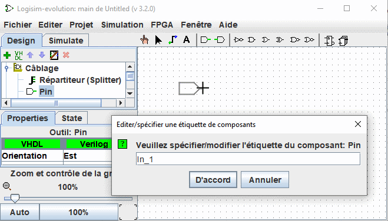

Étiquettes auto-numérotées
Cette option vous permet de placer des composants avec des étiquettes auto-numérotées, par exemple Led_1, Led_2... . Pour l'utiliser, procédez comme suit :
Sélectionnez un outil dans le panneau de navigation, par exemple une connexion, et déplacez-le vers la surface de travail et avant de cliquer pour le déposer, appuyez sur la touche L .
Entrez un nom d'étiquette se terminant par un nombre, par exemple "In_1".

Désormais, lorsque vous déposez des composants de ce type, ils seront automatiquement étiquetés avec un incrément. Lorsque l'option est activée, l'ombre des composants avant leur placement est colorée en rose.
Il est possible d'activer cette option pour différents composants simultanément.

Pour désactiver, procédez de la même manière que pour l'activation, mais utilisez la touche A. Si vous avez activé l'auto-étiquetage sur des composants d'un autre type. Vous devez le désactiver individuellement pour chaque type de composant.
Touches et fonctions associées
L : Activer la fonction et définir/modifier l'étiquette
T : Basculer la visibilité de l'étiquette
H : Définir la visibilité de l'étiquette sur faux (cacher)
V : Définir la visibilité de l'étiquette sur vrai (montrer)
A : Met fin à la fonction d'étiquette auto-numérotée
Suite: Placer des composants en matrice.